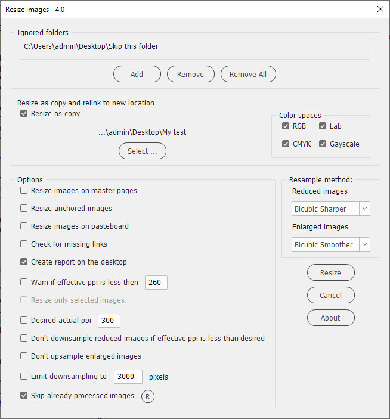

Resize images
Script for InDesign and Photoshop — version 4.4. Written by Kasyan.
Written and tested in InDesign and Photoshop 2024 and 2026 on Windows.
I couldn’t test it on my Mac because BridgeTalk — the feature used to communicate between Adobe apps — doesn’t work there.
Designers often place large photos in InDesign and scale them down in the layout. A photo scaled to 25% still carries all its original pixels, so the document gets heavy, slow to export and slow to print. Sometimes it’s the other way round: an image is enlarged in the layout and its resolution drops below what the printer needs.
This script fixes this automatically. For every placed raster image, it measures how much the image is scaled in InDesign, opens the file in Photoshop, resizes it to exactly that size, saves it, and sets the image back to 100% in InDesign. The image looks the same on the page, but its actual resolution now equals its effective resolution (or the resolution you ask for), and the file holds only the pixels it really needs.
Requirements
- InDesign and Photoshop installed on the same computer. If Photoshop isn’t running, the script offers to start it. Wait until Photoshop has finished loading and run the script again.
- An open InDesign document that contains images.
- The document must be saved. A new document that has never been saved, or a document converted from an older InDesign version and not yet saved, is refused.
Important: unless you turn on Resize as copy (see below), the script overwrites the original image files. Make a backup of your images before running it.
Supported image formats
TIFF, PSD, JPEG, PNG, WebP, HEIC/HEIF, CompuServe GIF, Windows Bitmap, PC PaintBrush and Scitex CT.
- PNG images are saved as PSD and relinked.
- WebP and HEIC/HEIF images are saved as JPEG (maximum quality) and relinked. WebP files are first converted to JPEG in a Resaved WebP subfolder next to the original, because InDesign reads their resolution incorrectly.
- If a file’s extension doesn’t match its real type (for example, a JPEG downloaded from a web site and named .webp), the script copies it with the correct extension into a Corrected extension subfolder, relinks it, and then processes it as usual.
- JPEG images are saved at maximum quality. A JPEG that is already placed at 100% is left alone.
Images the script skips
- Missing links and links with any status other than OK (modified links are updated first, so they are processed).
- Images inside placed InDesign files.
- 1-bit (black-and-white bitmap) images.
- Images in locked frames or on locked layers.
- Images in the folders on the Ignored folders list.
- Images excluded by the options in the dialog box (master pages, anchored, pasteboard, already processed, color space).
- Images placed at 100% — there’s nothing to resize (PNG, WebP and HEIC images are still converted).
Images placed more than once
If the same file is placed several times, it is processed only once, according to its largest instance, and all instances are relinked to the result. If such an image is scaled non-proportionally (different horizontal and vertical scale), it is skipped, because one file can’t match several different distortions.
The dialog box

The script remembers all settings in the dialog box between sessions. The first time you run it, it creates the default settings (listed below for each control).
Ignored folders
Images stored in the folders on this list are never resized. Use it for logos, icons, stock images or any files that must stay untouched. Only the folder itself is ignored, not its subfolders. By default, the list is empty.
- List — shows the ignored folders. You can select several folders at once to remove them.
- Add — opens a folder selection dialog and adds the chosen folder to the list. If the folder is already there, you get a warning.
- Remove — removes the selected folders from the list.
- Remove All — clears the list.
Resize as copy and relink to new location
Use this panel if you want to keep the original images intact.
- Resize as copy — when on, the script doesn’t touch the originals. It saves the resized images into the folder you select and relinks the document to them. When off, the originals are resized in place. Default: off.
- Folder path — shows the last part of the path of the selected folder, or No folder has been selected. Hover over it to see the full path.
- Select ... — opens a folder selection dialog where you choose the folder for the new images. While Resize as copy is on and no folder is selected, the Resize button is disabled. If you select the folder where the originals are, the copies get a number added to their names, for example photo_(1).tif, so the originals aren’t overwritten.
Color spaces — available only when Resize as copy is on. Only images in the checked color modes are processed; the rest are left as they are. All four are on by default.
- RGB — process RGB images.
- CMYK — process CMYK images.
- Lab — process Lab images.
- Grayscale — process grayscale images.
Options
- Resize images on master pages — when on, images placed on master (parent) pages are processed too. Images on the pasteboard of a master spread are processed only if this option and Resize images on pasteboard are both on. Default: on.
- Resize anchored images — when on, images anchored in text (inline and anchored objects) are processed too. An anchored image in a text frame on the pasteboard is processed only if Resize images on pasteboard is also on. Default: on.
- Resize images on pasteboard — when on, images lying on the pasteboard, outside the pages, are processed too. They usually don’t print, so this is off by default. Default: off.
- Check for missing links — before processing, the script looks for missing images. If it finds one, it selects it in the layout; if there are several, it lists them. In both cases, you can stop the script and relink the images first, or continue without them. Default: on.
- Create report on the desktop — when on, the script writes a report to Report.txt on your desktop. It lists the processed images and what was done to each one, the skipped images and the reason, the locked images, and the images that couldn’t be processed because of an error (for example, damaged files). Each new report is added to the end of the existing file. Default: on.
- Warn if effective ppi is less than [ ] — when on, the script checks the effective resolution of all images before processing and warns you about those below the number you enter. You can stop the script and fix them, or continue. Default: on, 260 ppi.
- Resize only the selected image / Resize only N selected images — when on, only the images you selected in the layout before running the script are processed. Select the frames with the Selection tool or the images with the Direct Selection tool. The text of the check box shows how many images are selected. If nothing is selected, the check box is disabled. When this option is on, the master page, anchored and pasteboard options are disabled, because you chose the images yourself. Default: off.
- Desired actual ppi [ ] — when on, the resized images get the resolution you enter here, for example, 300 ppi for offset printing. When off, a reduced image keeps its original resolution and only its pixel dimensions change. Default: on, 300 ppi.
- Don’t downsample reduced images if effective ppi is less than desired — protects images that are scaled down but still have too few pixels. If an image’s effective resolution is already below the Desired actual ppi, removing pixels would make it worse. With this option on, such an image is resized without resampling: all pixels are kept, only the resolution is changed to the effective one, so the image can be placed at 100%. Default: on.
- Don’t upsample enlarged images — when on, enlarged images are resized without resampling: Photoshop doesn’t invent new pixels, it only changes the resolution to the effective one so the image can be placed at 100%. When off, enlarged images are upsampled using the method chosen in Enlarged images. This option disables the Enlarged images list. Default: on.
- Limit downsampling to [ ] pixels — prevents images from becoming too small. If after downsampling the longer side of an image would be shorter than the number you enter, the resizing is undone and the image is reduced only to that number of pixels on its longer side. If the image is already smaller than the limit, it isn’t downsampled at all. Useful when the layout may be reused at a bigger size later. Default: off, 3000 pixels.
- Skip already processed images — the script marks every image it processes. When this option is on, marked images are skipped, so running the script again on the same document doesn’t resize them a second time. Default: off.
- R (reset button) — clears the marks, so all images are treated as unprocessed. The script asks for confirmation and shows which images are marked. If you click Yes, it closes the dialog box, clears the list and quits; run it again to resize the images.
Resample method
Choose how Photoshop recalculates the pixels. Hover over a list to see a hint about the selected method.
- Reduced images — the method used for images scaled down in the layout. Default: Bicubic Sharper.
- Enlarged images — the method used for images scaled up in the layout. Disabled when Don’t upsample enlarged images is on. Default: Bicubic Smoother.
Available methods:
- Nearest Neighbor — preserves hard edges; good for screenshots and pixel art.
- Bilinear — averages the colors of surrounding pixels; medium quality.
- Bicubic — best for smooth gradients.
- Bicubic Smoother — best for enlargement.
- Bicubic Sharper — best for reduction.
An image scaled non-proportionally — reduced in one direction and enlarged in the other — is always resampled with Bicubic.
Buttons
- Resize — saves the settings and starts processing. A progress bar shows which image is being checked and resized. When it’s done, a message tells you how many images were resized and how long it took.
- Cancel — closes the dialog box without doing anything.
- About — opens this page in your web browser.
Tips
- Try the script on a copy of the document and its images first, or use Resize as copy.
- Keep Create report on the desktop on: the report explains what happened to every image and why some were skipped.
- Turn on Skip already processed images if you run the script on the same document several times, for example, after adding new images.
- After the script finishes, check the Links panel: resized images are placed at 100%, and their actual and effective ppi should be the same.
If you have any feedback — complaints, comments, or suggestions — feel free to send me an e-mail putting Resize images into the subject line. (Warning: unfortunately, I can’t reply to all the e-mails I get because of lack of time. Sorry in advance!)
If you found this script useful and want me to develop it further, consider supporting me by donating via PayPal directly to my e-mail: askoldich [at] yahoo [dot] com (Due to PayPal’s restrictions for Ukraine, I can’t have a Donate button on my site.)
Click here to download the current version of the script.